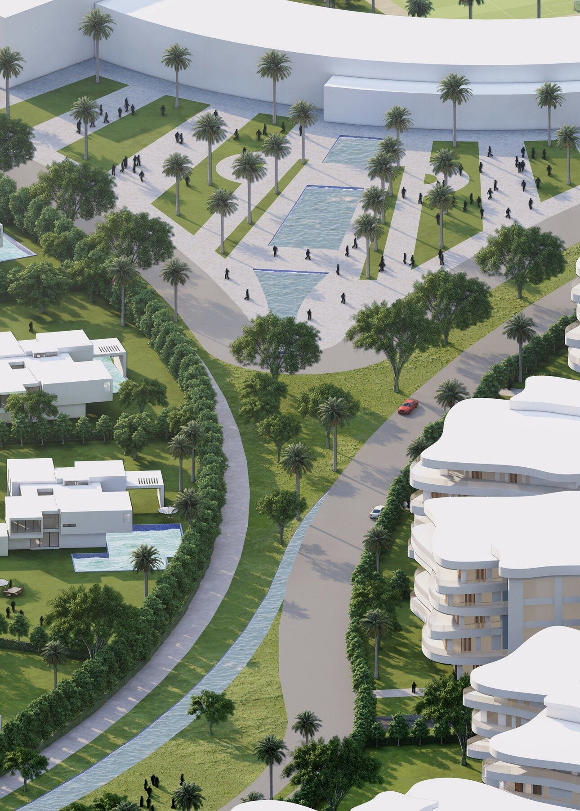
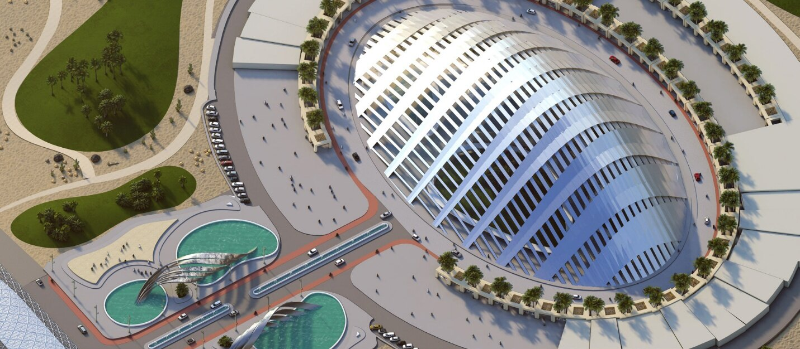
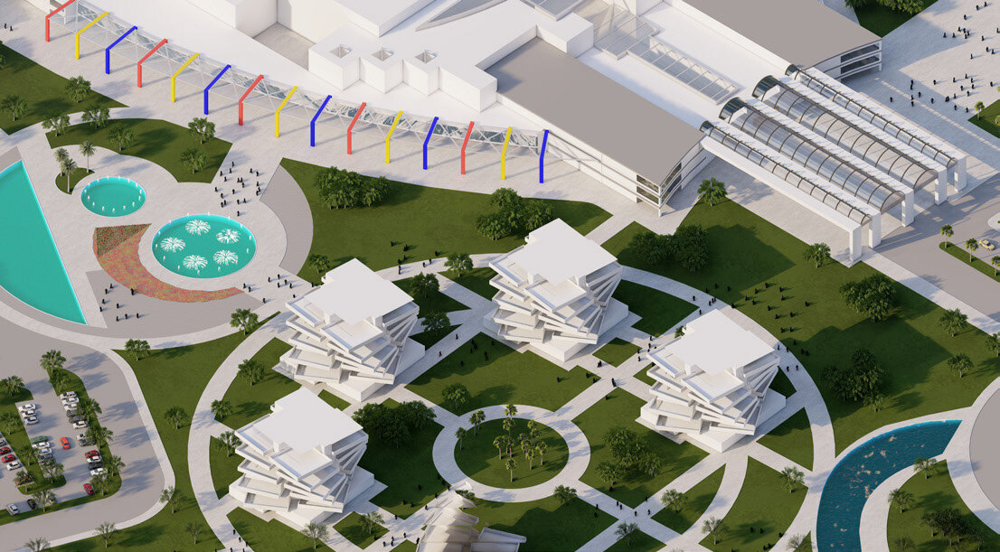

/ ADEC — URBAN DESIGN
Cairo Cloud:
New Town in Town
An ADEC mixed-use masterplan for Cairo — a “new town in town” gathered beneath a sweeping white canopy, a cloud that shades the plazas, retail and public life at the heart of the district.
/ CONCEPT
A cloud that gives a new district its centre and its shade.
Cairo Cloud proposes a self-contained “town in town” — a dense mix of retail, offices, residences and public space knitted into a single walkable district rather than scattered across separate plots.
Its organising idea is a large, undulating white canopy — the cloud — that floats over the central plazas. The canopy shelters the public realm from Cairo’s sun, gives the development an unmistakable identity from the air, and ties the surrounding blocks and towers to a shaded, active heart on the ground.
The renders here are the ADEC proposal. Swap in the project’s own brief, programme mix and credits when ready.



